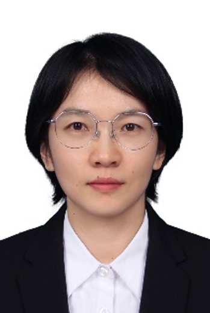

Welcome to
NEFU
软件工程专业
我们有最优秀的师资队伍
东北林业大学软件工程专业拥有一支实力雄厚的高水平师资队伍，他们中既有德高望重的老一辈学者，也有初露锋芒的青年专家。这支队伍是学校培养优秀人才的主力军，也是学校科学研究、社会服务与文化传承创新的中坚力量。
我们有完备的教学设备
每一年学校都会对教学设备进行更新，保证学生的学习质量，保证学生可以体验到先进的技术。
我们的毕业大学生的就业情况是非常客观的
学院每一年都可以培养许多的优秀大学生，而软件工程专业的毕业生就业情况是非常好的，我们专业的学生有着很高的就业率，毕业去向和薪资也是非常可观的。
这
是一门研究用工程化方法构建和维护有效的学科是一门实用和高质量的软件的学科
它涉及程序设计语言、数据库、软件开发工具、系统平台、标准、设计件有电子邮件、嵌入式系统、人机界面、办公套件、操作系统、编译器、数据库、游戏等。
同时，各个行业几乎都有计算机软件的应用，如工业、农业、银行、航空、政府部门等。
It involves programming languages, databases, software development tools, system platforms, standards, design pieces such as e-mail, embedded systems, human-machine interfaces, office suites, operating systems, compilers, databases, games, etc.
At the same time, almost all industries have computer software applications, such as industry, agriculture, banking, aviation, government departments and so on.
同时，各个行业几乎都有计算机软件的应用，如工业、农业、银行、航空、政府部门等。
It involves programming languages, databases, software development tools, system platforms, standards, design pieces such as e-mail, embedded systems, human-machine interfaces, office suites, operating systems, compilers, databases, games, etc.
At the same time, almost all industries have computer software applications, such as industry, agriculture, banking, aviation, government departments and so on.
教师代表
-

王波
讲师，硕士。主要研究方向：计算数学，软件开发。发表学术论文3篇。 -

李莉
博士，副教授，东北林业大学青年成栋名师、软件工程专业主任。 -

董素宇
工学博士，讲师。西安大略大学访问学者。 -

张锡英
副教授，硕士，硕士生导师。主要研究方向：现代信息技术及网络应用，数据库技术、图像检索。
科研项目
近年来，学院取得诸多的研究成果，在国内外重要学术刊物和国际学术会议上发表学术论文1500余篇，其中600余篇被SCI/EI收录；获得知识产权300余件；参加国内外学术会议和学术交流100余人次。
研究团队与创新平台
学院设有国家级重点学科“林业工程”下的“林业信息工程”方向1个，计算机科学与技术、软件工程、信息与通信工程一级硕士点学科3个，电子信息类（包含计算机技术、软件工程、新一代电子信息技术（含量子技术等）、农业工程与信息技术专业学位点2个。另有3个省部级科研平台和8个研究室，建立了一支以博导为核心，硕士导师为骨干的科学研究队伍。